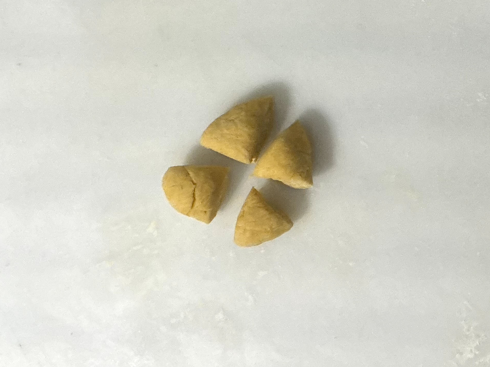
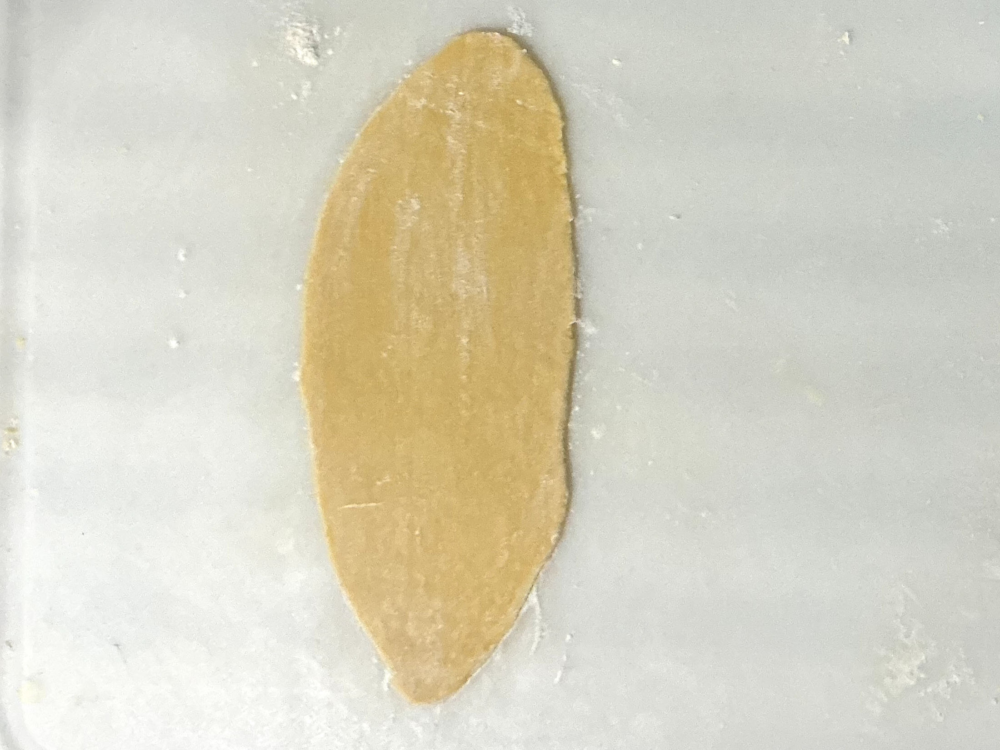

By Hand
Once the pasta dough has rested, it’s time to roll, fold, and cut it. Begin by dividing the dough into smaller portions to make it more manageable.

Flatten each piece slightly using your hands or a rolling pin, then gradually roll it out into thin sheets.

When cutting by hand, lightly flour the sheet, fold it over itself in thirds, or roll it loosely into a log. Then, slice it with a sharp knife into ribbons of your desired width.

After cutting, gently fluff the noodles and toss them with a little flour or semolina to prevent sticking until you are ready to cook.

Using a Pasta Roller and Cutter
Using a pasta roller and cutter tool enhances the precision and efficiency of making pasta.

The roller begins by feeding the dough through at its widest setting and then passes it through multiple times, gradually reducing the thickness setting with each pass. This method results in a uniformly even sheet of dough without tearing.
For cutting, the rolled sheet is transferred to a cutter tool, such as a fettuccine or spaghetti cutter, which slices the dough into uniform strands with clean edges.
The cutting tool significantly reduces the manual effort required, leading to consistent results.
Similar to hand-cut pasta, the cut noodles should be lightly dusted with flour and can either be cooked immediately or laid out to dry.